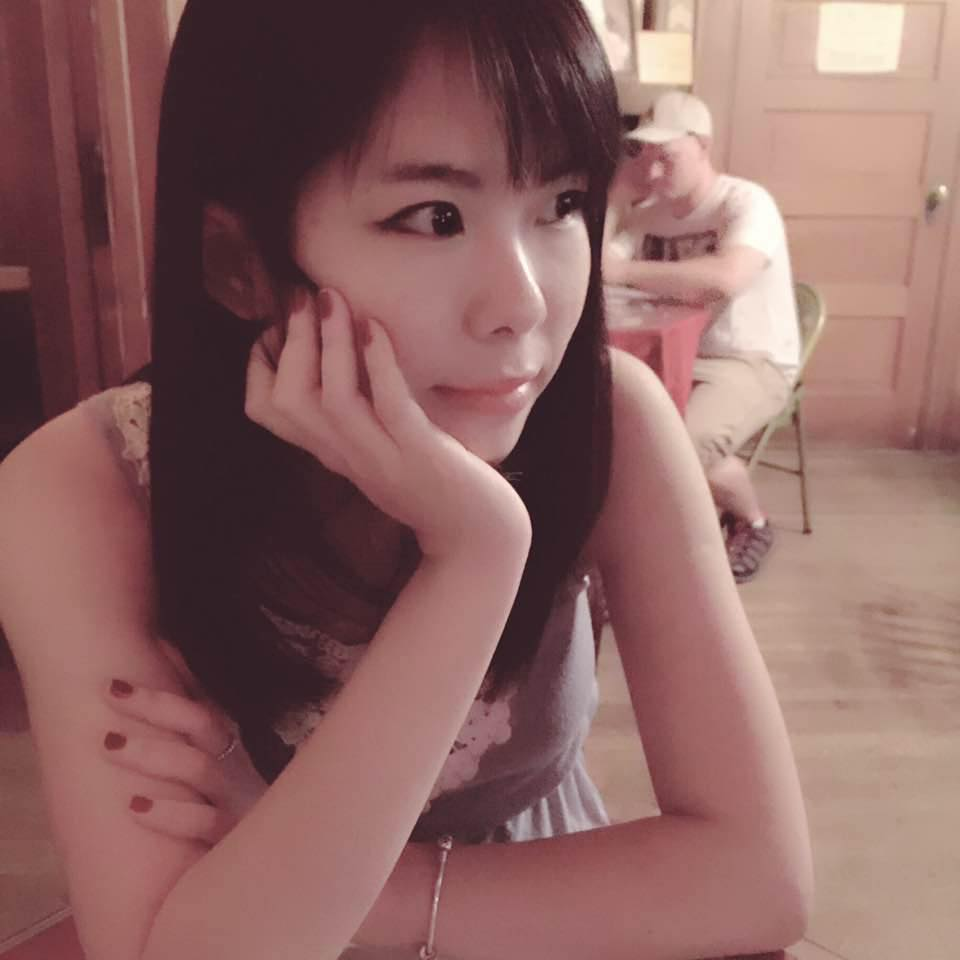

This is the first webpage I have every created. The file also inclued another porject file called "favorite-places". Language used: html, css.
I made this project when I learn how to use headers and list on a html file. Language used: html.
I learned how to use header, body, paragraphs and list on a html file. Language used: html.
I learned how to add hyperlink and image to a html file. Language used: html.
I learned how to apply css style on a html file. Language used: html, css.
Education:
Job Experience:
Sales Jun.2015-onging
Spring Market
Student Guidance Counselor Jan. 2015 – Mar. 2015
Portland State University | Meadow Park Middle School
Substitute Teacher Assistant at Yufang’s Chinese Learning Center at Beaverton location. Aug. 2014—Sep.2014
Current interests, hobbies, and skills:
I am interested in learning new skills and eventually find a better job in the future. My hobbies are hiking, listening to music, playing video games. I am good at painting. I can speak both Mandarine and Cantonese fluently.